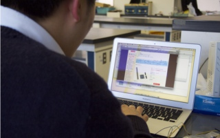
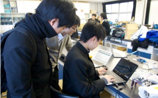

「新しいものを求め続ける」
ソフトウェア班は物理部員の半数以上が所属している物理部の柱となる存在です。彼らは全員「常に新しく、魅力的なソフトウェア」作りにむけて、積極的に新しいことを取り入れることを大切にしています。ソフトウェア班に必要なものは「新しいものを求め続ける」ことだけです。
人々を虜にするゲーム作り
我々ソフトウェア班はゲーム作成も行なっています。多くの班員が文化祭に向けて自作ゲームを作り展示しています。作り方は様々で昨年はflashを用いて作ったシューティングゲームやExcelを使ったタイピングゲームが評判でした。現在部員が作成中のゲームの中には「C++」や「C#」というプログラミング言語を使って作成中のあるゲームをモチーフにしたシューティングゲームや、unityという3Dコンテンツを簡単に作成できる開発環境を使って作成中のアクションゲームなどがあります。

例えば去年はwiiリモコンの動きを3D空間上でシミュレートするプログラムを作成しました。それを使用した人はその正確さに驚きました。
現在作成中のソフトウェアには我が海城の校舎を3Dモデルで再現するプロジェクトやxbox用のコントローラーであるkinectセンサーを利用したソフトウェア を作成するプロジェクトなどがあります
